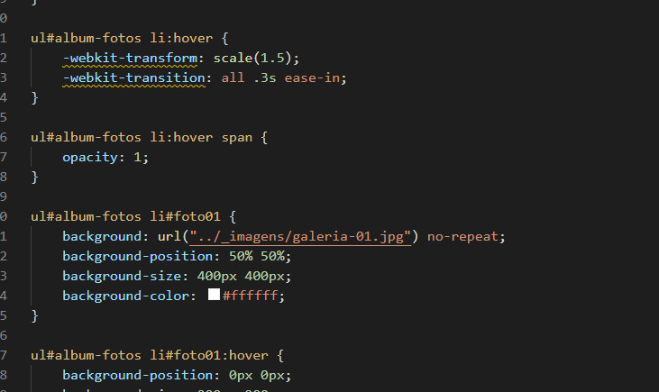
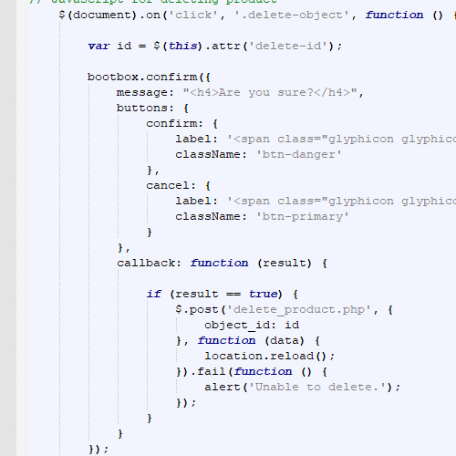

Click to Read!

is a style sheet language used for describing the presentation of a document written in a markup language such as HTML.[1] CSS is a cornerstone technology of the World Wide Web, alongside HTML and JavaScript

HTML5 is a markup language used for structuring and presenting content on the World Wide Web. It is the fifth and last major HTML version that is a World ...
JavaScript is high-level, often just-in-time compiled, and multi-paradigm. It has curly-bracket syntax, dynamic typing, prototype-based object-orientation, and first-class functions.
